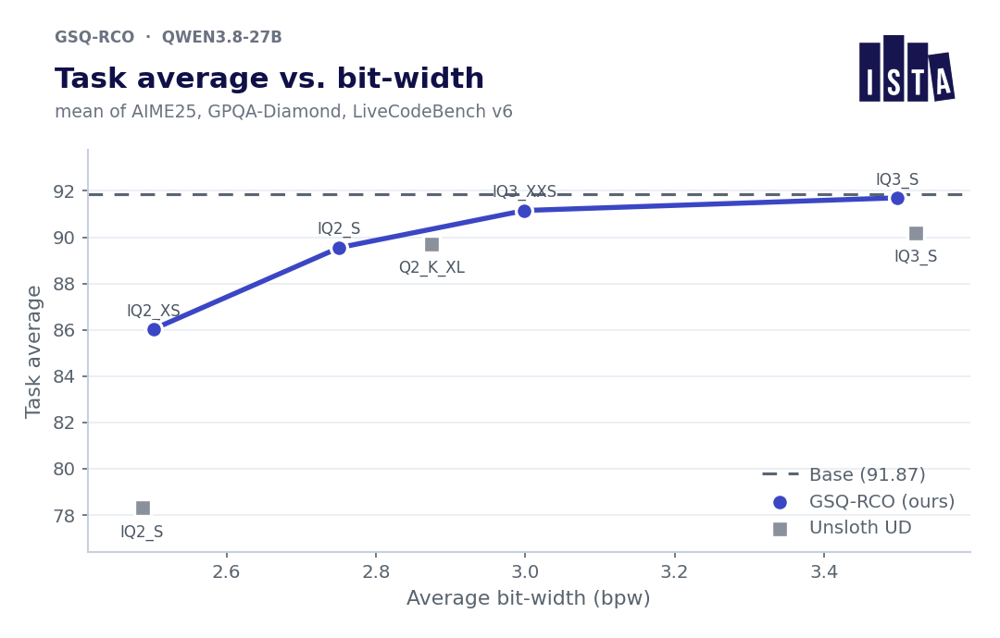

A quantization release normally hands you weights and a table. This one hands you the decision.
ISTA-DASLab, Dan Alistarh’s group at the Institute of Science and Technology Austria, put up GGUF quantizations of Qwen3.8-27B at four sizes, from 2.50 to 3.50 bits per weight. Alongside each file sits a 25 kB text file listing the quantization type assigned to every one of the model’s 851 tensors, plus the importance matrix used to produce them. The methods are two of their own papers, GSQ and RCO.
I downloaded all four allocation dumps and parsed them. Where the bits went turned out to be more interesting than the benchmark table, which hinges on a single question out of 198.
Two problems wearing one coat
“Quantize this model to N bits” is really two questions.
The first is the quantizer. Given one weight tensor and a target format, where do you put the grid points and the group scales? Scalar methods like GPTQ and AWQ answer this well down to about 3 or 4 bits and then plateau. Vector and trellis methods like QTIP and AQLM do better below that, at the cost of a format ordinary inference kernels cannot read. GSQ argues the gap is not fundamental: relax the discrete choice of grid point with a Gumbel-Softmax whose cardinality matches the handful of levels you actually have at 2 to 3 bits, learn assignments and scales together, and a scalar quantizer recovers most of the vector frontier while still producing something llama.cpp can execute today.
The second is the allocator. This model has 402 weight tensors worth quantizing and they are not equally fragile. Given K candidate formats, N tensors and a total file size, which format does each tensor get? Model loss does not decompose across tensors, so a greedy per-tensor answer is wrong. Evolutionary search sees the true loss but has no gradient. Penalty methods get a gradient but only approximately satisfy the budget, and you tune the penalty weight per problem.
RCO’s move is geometric. Under a softmax relaxation the budget constraint turns out to describe a smooth Riemannian manifold in logit space whose normal vector has a closed form. So you can run Adam on the actual loss, project onto the tangent space, retract with a binary search, and land exactly on the budget with no constraint hyperparameter at all.
Quantize every tensor at every candidate type, search for the assignment, stitch the winners into one standard GGUF. The result runs unmodified in llama.cpp and Ollama.
Every score in the table is an integer in disguise
The model card leads with the 3.50 bpw file and calls it task-lossless: identical to the BF16 base on AIME25 and LiveCodeBench v6, and 0.51 points behind on GPQA-Diamond, at roughly a fifth of the size.
Those three benchmarks hold 30, 198 and 175 items respectively. So I multiplied every published score by to see whether it came back to a whole number of problems. All 24 of them did, to within 0.01. That confirms the denominators, and it converts the whole table into something more legible than percentages.
Once you can read it that way:
- “trails by 0.51 points on GPQA-Diamond” is one question out of 198.
- “leads by 3.33 points on AIME25” is one problem out of 30.
- “leads by 1.71 on LiveCodeBench” is three problems out of 175.
- The reported task-average gap, 91.70 against 91.87, is that one GPQA question divided by three.
A benchmark cannot express a difference smaller than one item, which is 3.33 points on AIME25, 0.51 on GPQA-Diamond and 0.57 on LiveCodeBench. Three of the four headline numbers are sitting on that floor.
The standard error makes the same point less charitably. For a difference of two proportions at , the unpaired binomial standard error is
which puts the flagship 0.51-point gap at 0.17 sigma. These evaluations run on identical items, so a paired test would be tighter and fairer, but per-item results are not published, so nobody outside the lab can run one.
AIME25 is the worst offender and it is not really the release’s fault. The base model scores 30 out of 30. A saturated benchmark cannot report a degradation smaller than one problem, and “the quantized model also got 30 out of 30” tells you almost nothing about the quantizer.
The result that survives is at the other end
Run the same conversion at the tightest budget, where the GSQ-RCO file at 8.4 GB meets Unsloth’s dynamic quantization at the same 8.4 GB:
- GPQA-Diamond: 84.85 against 76.26. Seventeen questions.
- LiveCodeBench v6: 76.57 against 72.00. Eight problems.
- AIME25: 96.67 against 86.67. Three problems.
Seventeen questions out of 198 is 2.17 sigma even on the conservative unpaired test. That is a real result, and it is the one the card mentions third.
It is also visible in the lab’s own chart, at the far left, where the two 2.5-bit points sit 7.7 task-average points apart. By 3.5 bits the same gap is 1.5 points and everything has converged onto the base model’s line.

Learned allocation earns its keep exactly where the budget is too tight for a bad assignment to be absorbed. That is also where hand-tuning is hardest, which is presumably why the gap is there. At 3.50 bpw both allocators are close enough to the base model that these benchmarks cannot tell them apart, and reporting a win there is reporting a coin flip.
The cheap metric behaved and the expensive one did not
All three perplexity columns fall monotonically as the budget grows. Wikitext2 goes 7.69, 7.39, 7.20, 7.07. C4 and FineWeb-Edu do the same, without an inversion.
The five-task zero-shot average goes 74.54, 75.70, 74.81, 74.47. The 2.50 bpw model beats the 3.50 bpw model on it. All four quantized models also score above the BF16 base’s 74.34, which is where the recovery figures of 100.3%, 101.8%, 100.6% and 100.2% come from.
A quantized model does not acquire capability its base model lacked. Four recovery numbers above 100% are four measurements of the noise floor on those five tasks. And the recovery column, which is the card’s fidelity metric, is computed from the column that wanders. Perplexity, the proxy everyone is trained to distrust, is the one that ranks these four files correctly.
What the allocator actually decided
The harness that produces every number below is in the post’s research folder.
One caveat on method. Bits per weight for the IQ types are the figures llama.cpp’s own quantize tool prints. Every mean below is unweighted over tensors, so it describes the pattern of decisions and not the file’s true bit-width, which would need tensor shapes I do not have.
The first thing the dump gives you is the architecture, which the card never mentions. Sixty-four blocks. Blocks 3, 7, 11 and every fourth through 63, sixteen in total, are full attention with separate attn_q, attn_k, attn_v and attn_output. The other 48 carry a fused attn_qkv, an attn_gate and an SSM mixer. Qwen3.8-27B is a 3:1 hybrid and you can read that straight off a list of tensor names.
# RCO per-tensor GGUF allocation
# Target whole-file bpw: 3.50
# Tensor count: 851
# Quant-type counts: BF16=96, F32=353, IQ1_M=1, IQ2_S=17, IQ2_XS=9, IQ2_XXS=5,
# IQ3_S=144, IQ3_XXS=78, IQ4_XS=96, Q2_K=13, Q4_K=39
blk.0.attn_qkv.weight: IQ4_XS
blk.0.ffn_down.weight: IQ2_S
blk.0.ffn_gate.weight: IQ2_XS
blk.0.ffn_up.weight: IQ2_XXS
blk.0.ssm_alpha.weight: BF16
blk.0.ssm_beta.weight: BF16
RCO chooses for 402 of the 851 tensors. Of the rest, 353 stay F32, which is the usual norms and biases, and 96 stay BF16. Those 96 are exactly ssm_alpha.weight and ssm_beta.weight, one pair per SSM block, and the set is identical in all four files including the 2.50 bpw one. The SSM gating parameters are never quantized at any budget. That looks like a constraint someone imposed rather than something the optimizer discovered, and it is defensible: in a recurrent mixer an error in the state transition does not stay local to one token, it rides along the sequence. It is still worth knowing before you quote “2.50 bits per weight” at somebody.
Deeper layers get more bits
Mean assigned bits rise monotonically with depth, in every one of the four files.
tensor-allocation/*.rco-allocation.txt files shipped with the release. The left panel is one budget across all 64 blocks; the right is all four budgets summarised by quartile.The gap from the first quarter of the network to the last is +0.77, +0.82, +0.85 and +0.82 bits at the four budgets. Spearman correlation between block index and mean assigned bits is +0.74, +0.75, +0.80 and +0.77. Four independent optimizations, same slope, and nothing in the setup told it to do this.
The embedding gets sacrificed, the head does not
At 2.50 bpw, token_embd.weight is IQ1_M, 1.75 bits, the most crushed tensor in the file. output.weight is IQ4_XS at 4.25 bits, near the top of the ladder. That ordering holds at all four budgets.
Compare that to llama.cpp’s own quantizer, which hard-codes a floor for these tensors: llama_tensor_get_type forces output.weight up to Q5_K when the rest of the file is on IQ1, IQ2 or IQ3 types, and Q6_K otherwise. An untied token_embd, which is what this model has, gets no such protection.
So llama.cpp protects the head by rule and leaves the embedding exposed, and RCO arrives at the same shape from the loss alone. With two twists. It puts the head at 4.25 bits, below the Q5_K floor llama.cpp would have forced, so it is less conservative than the hand-written rule. And it is far more aggressive on the embedding than any default would dare.
An embedding lookup error is a fixed offset entering a 64-block residual stream that has every opportunity to absorb it. The output projection writes straight into the logits with nothing downstream to correct it.
The allocations are not nested, and that matters
Raising the budget sometimes takes bits away from a tensor.
Between adjacent budgets, 14.7%, 14.2% and 6.7% of the 402 tensors get fewer bits than they had at the smaller budget. Comparing the 2.50 bpw file to the 3.50 bpw file, a 40% larger budget, seven tensors still end up lower. blk.11.attn_k.weight goes from Q4_K down to IQ2_S, losing two full bits while the file around it gains. And blk.13.ffn_gate.weight runs IQ1_S, IQ1_M, IQ4_XS, IQ1_M across the four budgets; it is the only tensor still on a 1-bit type in the 3.50 bpw file.
My reading is that this is what a flat objective looks like. Many allocations reach nearly the same loss, each budget is solved independently, and the search lands somewhere different each time. The aggregate pattern barely moves while the individual assignments shuffle.
So a single tensor’s assignment is not a sensitivity measurement and should not be read as one. If you were about to look up your favourite layer in the dump and conclude something about it, do not. The depth gradient and the embedding result are worth trusting because they survive four separate optimizations. The blk.13 curiosity is exactly the kind of thing that does not.
Three ways to answer the same question
I should declare an interest here. I built RAMP, which solves per-layer bit allocation as a constrained MDP with Soft Actor-Critic, so I have spent a while inside this problem and I am not a neutral party on it.
There are now three families of answers:
Heuristics, including Unsloth’s hand-tuned dynamic quants and llama.cpp’s built-in type rules. Cheap, transparent, and the baseline this release beats by 17 GPQA questions at 2.50 bpw and ties at 3.50.
Learned policies, which is what RAMP does. Expensive to train once, then applied to a new model with no new search.
Constrained continuous optimization, which is RCO. Exact budget, no constraint hyperparameter, optimizes the real loss.
The axis nobody states is amortized against per-instance. RCO is not a competitor to a learned policy so much as a better solver for a single instance, and it pays that cost every time: a new model or a new budget means a new search. The four non-nested allocations in this release are that property showing through. A learned policy trades some per-instance quality for the ability to skip the search entirely. Which one you want depends on whether you are quantizing one model carefully or forty models on a schedule.
What I would take from this
If you are choosing a file: the 2.50 bpw one is where this method is actually doing something for you. At 3.50 bpw you are picking between allocators that these benchmarks cannot distinguish, so pick on file size and move on.
If you are reading a quantization result: divide by the number of items before you believe a gap. Published quantization comparisons report GPQA-Diamond to two decimal places. One question is worth 0.51 points, so everything after the first decimal is decoration.
If you are shipping a quantized model: ship the allocation. It cost this release 25 kB per file and it is the only reason this post has anything in it beyond arithmetic. I would not have found the depth gradient, the untouched SSM gates or the non-nested solves from the weights alone, and neither can anyone else.
The GSQ-RCO release, the results table and the plot above are ISTA-DASLab’s, from the model card, read 5 September 2026. The methods are Dadgarnia, Tabesh, Nikdan, Helcig, Kurtic, Kleinegger and Alistarh (GSQ) and Helcig and Alistarh (RCO). Benchmark sizes: GPQA-Diamond 198 questions, AIME 2025 30 problems, LiveCodeBench v6 175. The item-count conversion, the standard errors, the allocation parse and the three drawn figures are mine, and the harness that reproduces every number is in the post’s research folder.